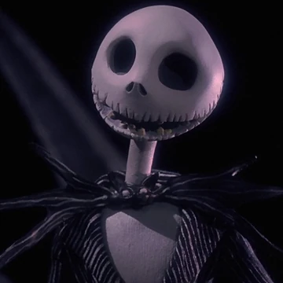
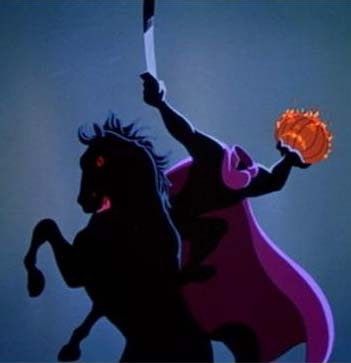
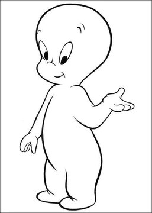

Jack Skellington
Jack Skellington is the main character from The Nightmare Before Christmas. He is an imaginative figure with a deep sense of curiosity. As the pumpkin king he is admired for his energy and leadership. He is constantly yearning for new and meaningful ideas. Jack will be a fantastic dinner guest due to his charming and respectful personality. He will bring a fun, whimsical energy to the party.
Headless Horseman
The Headless Horseman is a relentless and bold figure. He does not speak much and often lets his eerie presence speak for itself. His primary goal is to find his missing head and he is determined. The Horseman will bring a mysterious stillness to the dinner party. He is invited because he is well mannered and a classic legend.
Casper the Friendly Ghost
Casper is a kind hearted and friendly ghost. He does not have the traits of a classic ghost. Casper does not enjoy scaring people, he wants to make friends and spread kindness. Sometimes he is lonely because of his lack of connection. Casper is invited because he is a very kind guest. He will make everyone feel welcome. We also want to make Casper feel welcome.